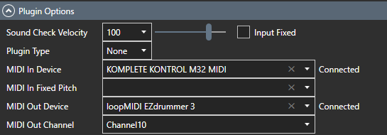

外掛
編輯鼓圖。
編輯鼓圖
設定插件和套件資訊。

- 從插件列表中選擇一個插件。如果插件不存在，請新增該插件。
- 從套件清單中選擇一個套件。如果您沒有套件，請添加一個。
- 使用音調列表配置地圖設定。
推廣清單
設定VST（鼓音來源）中定義的鼓映射資訊。

-
姓名
- 輸入推介名稱。如果為空，則不會設定音高。
-
關節
- 從搜尋按鈕開啟清晰度選擇螢幕，然後選擇合適的一個。
-
分隔符
- 從組合方塊中選擇適當的一項。
篩選
按音高名稱和發音名稱過濾。

您可以使用星號 (*) 指定通配符。
- 如果未指定則完全匹配
- 如果新增在關鍵字的開頭，則為後綴相符。
- 如果加在關鍵字的末尾，就是前綴匹配。
- 如果在關鍵字之前或之後使用，則部分匹配
種類
- 在適用的音調行中輸入每個項目。
-
您可以透過點擊列標題來變更排序順序。
- 第一次按升序排序，第二次按一下將按降序排序，第三次將傳回初始狀態。
- 某些編輯功能在排序狀態下受到限制。如果要編輯，請將其恢復到初始狀態。
聲音檢查

點選音調清單每行中的揚聲器圖示會將該行的音符開/關訊息傳送到 MIDI 連接埠。
內容選單
透過右鍵點選推介清單來顯示。

關節圖
從上下文選單呼叫時顯示。在這裡您可以看到哪些音高分配給了哪些演奏記號。

將顯示與發音相關的音高。
子列中選取的項目會自動插入音高。
外掛選項

-
聲音檢查速度
- 設定按下聲音檢查按鈕時輸出的音符力度值。
-
輸入固定
- 以固定音高啟用 MIDI。
-
MIDI 輸入裝置
- 選擇連接 MIDI 鍵盤的連接埠。如果不需要，請選擇空白。如果可用，將顯示「已連線」；如果不可用，將顯示「未連線」。
-
固定音高的 MIDI
-
指定要接受的 MIDI 鍵盤音符開/關訊息的音高。
如果指定該值並啟用“輸入固定”， MIDI 键盘输入转换为音调列表中选择的音符开/关消息并输出。
-
指定要接受的 MIDI 鍵盤音符開/關訊息的音高。
-
MIDI 輸出設備
- 選擇 MIDI 訊息輸出目的地。如果可用，將顯示「已連線」；如果不可用，將顯示「未連線」。